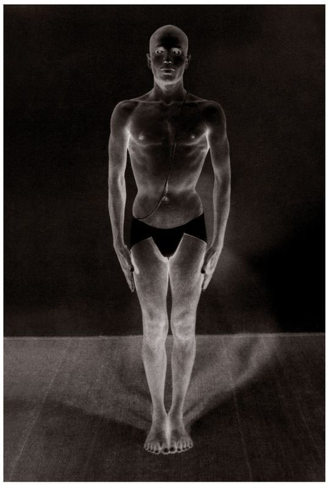
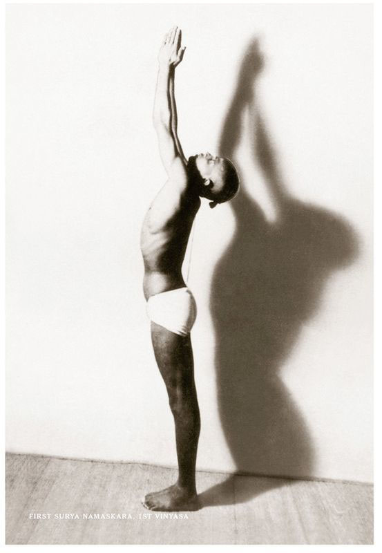
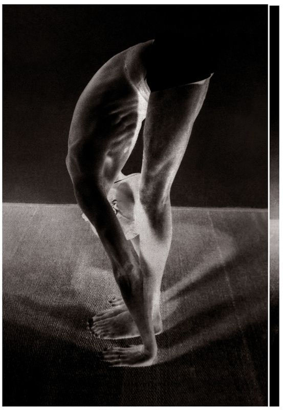
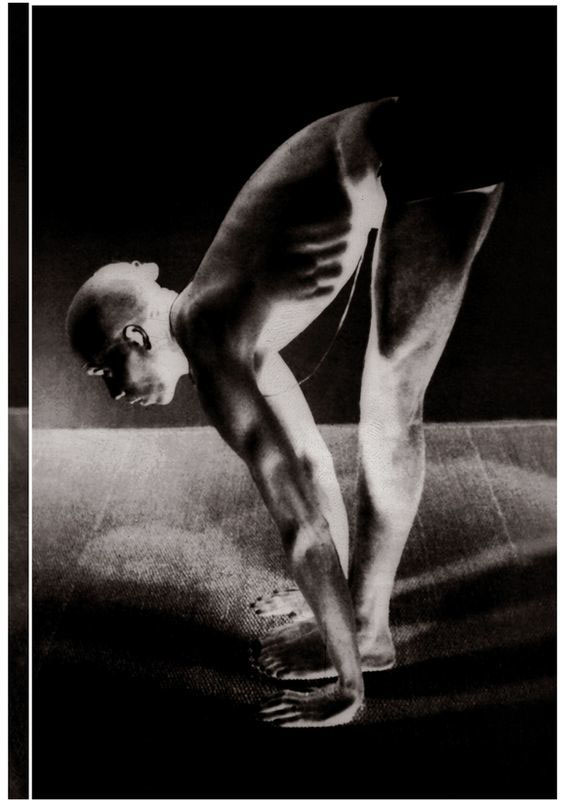
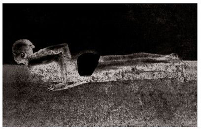
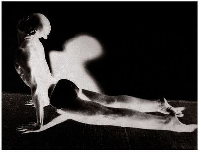
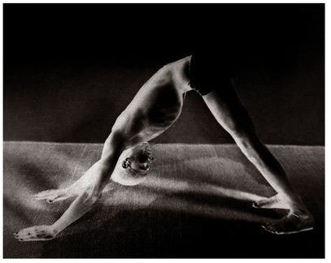
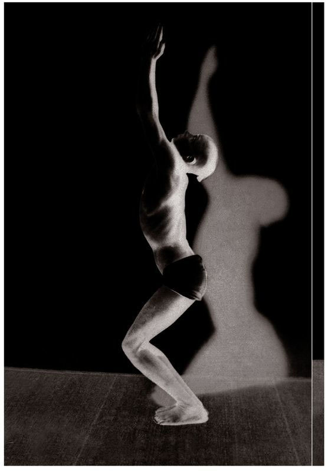
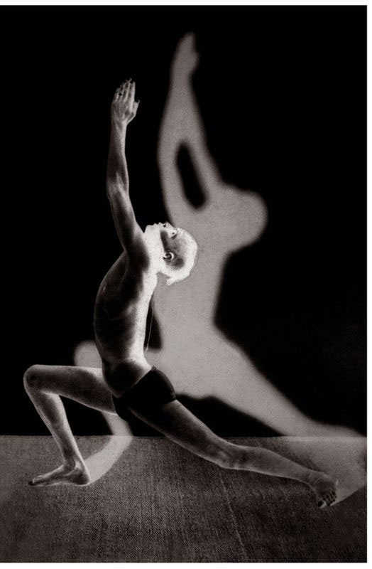

SURYA NAMASKARA AND YOGA ASANAS
THE PRACTICE OF THE SURYA NAMASKARA, OR SUN SALUTATIONS, HAS COME down to us from the long distant past, and is capable of rendering human life heavenly and blissful. By means of it, people can become joyous, experience happiness and contentment, and avoid succumbing to old age and death.¹⁰
Yet, nowadays, without ever having learned the traditions and practices of their ancestors and having no control over their sense organs, people engage in self-indulgence and destroy their mental powers for the sake of tangible gain. They deny reality simply because it cannot be seen and make their lives miserable, or subject to disease, poverty, and death. If they were to follow the traditions of their ancestors, however, they would develop their bodies and minds, and, in so doing, make possible the realization of the nature of the Self, as a scriptural authority confirms: “Nayam atma balahinena labhyah [This Self cannot be gained by one devoid of strength].”¹¹ With strengthened bodies, sense organs, and minds, they would become healthy and righteous, live long and intellectual lives, and be able to attain eternal liberation. Thus, if we want lives of health, righteousness, intellectuality, and longevity, let us never forget the ways and traditions of our ancestors.
By following the precept of the great sages, “Shariramadyam khalu dharma Sadhanam [The first duty is to take care of the body, which is the means to the pursuit of spiritual life],” our ancestors found the means to bodily health.¹² Such means, they knew, should not violate the scriptures, but be in accordance with them. And this, they knew, could only be possible through the Surya Namaskara and limbs of yoga. So they studied yogic science, brought it into practice, and were joyful. In all corners of India, too, people of every class were bringing the Surya Namaskara described in the yoga shastra into practice. This they did with the feeling that they were performing a righteous action which was a daily duty, for they knew the blessings of the Sun God are essential to good health. If we reflect on the saying “Arogyam bhaskarad icchet [One should desire health from the sun],” it is clear that those blessed by the Sun God live healthy lives. Therefore, for health—the greatest wealth of all—to be attained, the blessings of the Sun God must alone be sought.
SAMASTHITI

FIRST SURYA NAMASKARA. IST VINYA SA

To secure these blessings, the Surya Namaskara should be practiced in accordance with scriptural rules. The worship of the Sun must always be in the Namaskara form, since, while there are other forms of worship, the Namaskara alone are important. In the words of the scripture: “Namaskarapriya suryah [Namaskara is the beloved of the sun].” Thus, they should not be practiced whimsically, but in accordance with the method prescribed in the shastra. For it is only by the Namaskara, done in consonance with the rules and without violating the scripture, that the Sun, the God associated with health, will be pleased and confer the wealth of vitality upon us, and protect us as well. In short, if a person is to secure the fortune of health, he should perform the Surya Namaskara without abandoning the path prescribed in the shastras.
What are the shastras? They explain the meaning of mantras in such a way that even dull minds can easily understand them. Among the shastra s, those that elucidate the import of mantras related to the Sun God offer adorations and prayers to Him as follows: “Bhadram karnebhih shrunuyama devah / Bhadram pashyema / Akshabhir yajatrah [O Gods, while engaged in sacrifices, may we hear with our ears what is auspicious, may we see with our eyes what is auspicious ].” The purport of this mantra is to discern divinity in all the objects of the senses through the strengthening of the senses. It is a prayer not merely for the strength of the body, senses, and the mind, and for the elimination of diseases, but for inner happiness and ultimate liberation from transmigratory existence. If such happiness is to be gained, it can only be so by the healthy, not by the sick. Therefore, to become healthy, one should practice the Surya Namaskara in accordance with scriptural injunctions.
The method for doing the Surya Namaskara has been described in various ways by various people. We cannot categorically state which is correct, but when we reflect on the science of yoga, we see that the tradition of the Surya Namaskara follows, in the main, the method of vinyasa, or breathing and movement system, the movements of rechaka, or exhalation, puraka, or inhalation, and meditation. According to the yoga shastra, this tradition includes: vinyasa; rechaka and puraka; dhyana [meditation]; drishti [sight, or gazing place]; and the bandhas [muscle contractions, or locks]. And this alone is the method which should be followed when learning the Surya Namaskara, as yogis declare from experience. Indeed, the Sun Salutations done without following the rules mentioned above are little more than exercise, and not true Surya Namaskara.


FIRST SURYA NAMASKARA, 4TH VINYASA; SECOND SURYA NAMASKARA, 8 TH AND 12TH VINYASA (CHATURANGA DANDASANA)

There are two types of Surya Namaskara. The first consists of nine vinyasas, and the second, of seventeen. To learn the method for the vinyasas, rechaka and puraka, the bandhas, dhyana, and for trataka [gazing] and the like, one should be certain to consult a Satguru, for it would be wrong to try to learn yoga without recourse to such a teacher. If, however, one follows the scriptural path, and brings it into practice under the guidance of a Satguru who is not only well-versed in the yoga shastra but who has brought it into practice himself, then the three-fold diseases will be destroyed, and one will live a healthy life.¹³
There is a common perception that no medicine exists for mental ill-ness. The Shrutis, however, say that through the Surya Namaskara, even mental illness can be cured. Now, if we reflect on the meaning of a mantra such as: “Hridrogyam mama surya harimanam cha nashaya [Remove, O Sun, the pallor unhealthy to my heart and mind],” we see that even mental illnesses and diseases born of prarabdha karma [the results of past actions that are bearing fruit in this lifetime] can be destroyed. Our ancestors certainly studied the mantras, understood their meanings, and put them into practice. As a result, they lived long lives of good health, great strength, and high intellect, and, without ever succumbing to disease, death, or poverty, they attained divine knowledge, merged with bliss, and were forever content.
Thus, if the scriptural way of practicing the Surya Namaskara is followed, the most terrible diseases, such as leprosy, epilepsy, and jaundice, will be cured. In this regard, no one need entertain any doubt or disbelief; without question, the terrible diseases just referred to can be destroyed. Some people have received medical treatment for illnesses such as leprosy for years without ever being cured. Within five to six months, however, of practicing the Surya Namaskara, yogasana, pranayama , and the like, they have found themselves relieved of their ailments. This is borne out by my own experience. Therefore, people who practice yoga and the Surya Namaskara will not fall victim to maladies of any type. Hence, aspirants should engage in their practice and leave behind all fear and doubt.
Some people work by sitting or standing in one place for long periods of time and experience pains in their joints which make them unable to sit or walk without great difficulty. They pursue all kinds of medical treatment, and lead futile lives. But their afflictions can definitely be cured by the Surya Namaskara. Yogis speak of such afflictions as being associated with the nadis. To keep the body, which is the foundation of the performance of all sorts of meritorious deeds, pure and free from obstacles such as disease as much as possible, the Surya Namaskara and yogasana are very important. Indeed, in the present world, they are essential to all, men and women, young and old. Were all people to recognize their usefulness, bring them into practice, and teach their traditions to their families, it can be said with pride that our holy land of India would rejoice to find itself filled with fresh energy. Were the government itself to understand their usefulness, and make the practice of yogasana, the Surya Namaskara, and their traditions compulsory for all students in all educational institutions, boys and girls alike, which would help to render their lives pure, it would be doing a great service to the world. Indeed, Mother India would be very pleased. We should, therefore, never forget to carry the torch of this divine light of yogic knowledge, which has been passed down to us with our Vedic culture, and to keep its flame alight for all eternity.
FIRST SURYA NAMASKARA, 5TH VINYASA; SECOND SURYA NAMASKARA, 9TH AND 13TH VINYASA (URDHVA MUKHA SVANASANA)

FIRST SURYA NAMASKARA, 6TH VINYASA; SECOND SURYA NAMASKARA, 10TH AND 14TH VINYASA (ADHO MUKHA SVANASANA)

METHOD FOR DOING THE FIRST SURYA NAMASKARA
The first type of Surya Namaskara has nine vinyasas. To begin, join the legs together, with the heels and big toes touching, push the chest up, lower the head slightly, and stand straight, gazing at the tip of the nose; this is called Samasthiti, which means standing up in a straight line. Then, taking the breath in slowly through the nose, raise the arms straight up over the head, bring the hands together, lean the head back a little, and look at the fingertips; this is the 1st vinyasa. Then, releasing the breath slowly, bring the hands down to the floor on either side of the feet, straighten the knees, and touch the knees slowly with the nose; this is the 2nd vinyasa (see figure). Then, doing puraka (which means inhaling), lift only the head; this is the 3rd vinyasa. (For all subsequent vinyasas, see figures. ) Next, doing rechaka (which means exhaling), press the hands squarely onto the floor and, with only the strength of the hands, throw the legs back and hold the body straight on the hands and toes only; this is the 4th vinyasa. Then, doing puraka, push the chest forward with the strength of the hands, lift the head up, bend the waist, straighten the arms without touching either the thighs or knees to the floor, and extend the feet, toes pointed and tops pressed to the floor; this is the 5th vinyasa. For all the vinyasas, the body should be kept tight and straight. Then, doing rechaka, lift the waist up, tilt the head under, press the heels to the floor, pull in the stomach completely, and hold position, gazing at the navel; this is the 6th vinyasa. Following this, the 7th vinyasa conforms to the method of the 3rd vinyasa, meaning that while moving from the 6th vinyasa to the 7th vinyasa, do puraka, jump the feet in between the hands, press the legs together, and stand with the knees straightened and feet joined. The 8th vinyasa then follows the method of the 2nd vinyasa, and the 9th vinyasa follows the method of the 1st vinyasa. One should then be standing up straight in Samasthiti.
SECOND SURYA NAMASKARA, 1ST AND 17TH VINYASA (UTKATASANA)

SECOND SURYA NAMASKARA, 7TH VINYASA

This is the method for the first Surya Namaskara, which is often practiced while chanting mantras. For this, meditation is very important, as are the drishti, or gazing places, which include: nasagra drishti [the gaze on the tip of the nose] for samasthiti; broomadhya drishti [the gaze between the eyebrows] for the 1st vinyasa; nasagra dristri for the 2nd vinyasa; the gaze between the eyebrows for the 3rd vinyasa—in other words, for the odd-numbered vinyasas, the gaze should be focused between the eyebrows and, for the even-numbered ones, the gaze should be on the tip of the nose. In addition, for the even-numbered vinyasas, rechaka should be performed and, for the odd, one should do puraka. On the whole, the method for doing rechaka and puraka is the same for all the vinyasas and asanas ahead. A sadhaka [spiritual aspirant] should learn it with patience.
METHOD FOR DOING THE SECOND SURYA NAMASKARA
The second type of Surya Namaskara has seventeen vinyasas and its movements of rechaka and puraka are the same as for the first Surya Namaskara. To begin, stand straight, joining the legs together, as in the first Surya Namaskara. Then, doing puraka, bend the knees, which should be together, lift the chest, raise the arms straight up over the head, join the hands together, lean the head back a little, and stand gazing at the tips of the fingers; this is the 1st vinyasa (see figure). Next, doing rechaka, straighten the legs (do not bend the knees), press the hands down onto the floor on either side of the feet, as described in the first Surya Namaskara, and touch the knees with the nose; this is the 2nd vinyasa. Then, doing puraka, straighten the back, lift the head only; this is the 3rd vinyasa. Next, doing rechaka slowly, jump the body back into the form of a stick with only the strength of the hands, as described in the first Surya Namaskara, and rest with the head lifted a little; this is the 4th vinyasa. Then, doing puraka, push the body forward with the force of the arms, lift the chest, arch the back, and make the legs tight and straight, resting with the tops of the feet pressed to the floor; this is the 5th vinyasa. Then, doing rechaka, lift the waist up, press the heels to the floor, tilt the head, draw in the stomach tightly, and stare at the navel; this is the 6th vinyasa. Next, doing puraka, place the right foot between the hands, which are pressed to the floor, bend the knee of the right leg, straighten the thigh and knee of the left leg which is stretched back, raise the arms straight up over the head, bring the hands together, swell the chest, lean the head back a little, and rest, staring at the tips of the fingers; this is the 7th vinyasa (see figure). The 8th vinyasa then follows the method of the 4th vinyasa. The 9th vinyasa follows the method of the 5th vinyasa. The 10th vinyasa follows the method of the 6th. The 11th vinyasa follows the method of the 7th, though for the 7th vinyasa, the right leg comes forward and, in the 11th vinyasa, the left leg comes forward; this should be noted. Then, the 12th vinyasa again follows the method of the 4th. The 13th vinyasa follows the method of the 5th. The 14th vinyasa follows the method of the 6th. The 15th vinyasa follows the method of the 3rd. The 16th vinyasa follows the method of the 2nd, and the 17th vinyasa follows the method of the 1st. Then, comes Samasthiti.
For the second Surya Namaskara, the vinyasas, rechaka, and puraka follow the method described in the first Surya Namaskara. The only difference is that, in the second Surya Namaskara, the 1st, 7th, 11th, and 17th vinyasas introduce a different form; otherwise, the remaining vinyasas are the same as those for the first Sun Salutation. As earlier noted, even-numbered vinyasas indicate rechaka, and those with odd numbers signal puraka.
Aspirants should know this method, which is best learned from a Guru. They should also note that kumbhaka, or breath retention, does not occur either in the Surya Namaskara or the asanas. Those who practice the Surya Namaskara in accordance with scriptural rules must never forget to be mindful of the drishti, bandhas, dhyana, rechaka, and puraka, as discussed earlier. After finishing the Sun Salutations, worship and other religious activities should be performed while sitting in Padmasana. For those who practice asanas, the Surya Namaskara must be performed first and then followed by the asanas. This is the rule. Those who follow this rule will receive whatever they desire.
With this, the topic of the Surya Namaskara comes to a close.